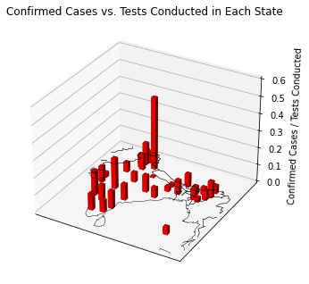

import numpy as np
import pandas as pd
import shapefile as shp
import matplotlib.pyplot as plt
from mpl_toolkits.basemap import Basemap
from mpl_toolkits.mplot3d import Axes3D
---------------------------------------------------------------------------
ModuleNotFoundError Traceback (most recent call last)
<ipython-input-1-39c8735c62f5> in <module>
----> 1 import numpy as np
2 import pandas as pd
3 import shapefile as shp
4 import matplotlib.pyplot as plt
5 from mpl_toolkits.basemap import Basemap
ModuleNotFoundError: No module named 'numpy'
# Read in Shapefile
shp_path = "shapefiles/India_Districts_ADM2_GADM.shp"
sf = shp.Reader(shp_path)
def read_shapefile(sf):
"""
Read a shapefile into a Pandas dataframe
Args:
sf: pyshp shapefile
Returns:
df: Pandas dataframe with a 'coords' column
"""
fields = [x[0] for x in sf.fields][1:]
records = sf.records()
shps = [s.points for s in sf.shapes()]
df = pd.DataFrame(columns=fields, data=records)
df = df.assign(coords=shps)
return df
# Data Frame generated from our Shapefile
df = read_shapefile(sf)
def filter_dataframe(dataframe, search_col, query):
"""
Filters a pandas dataframe and returns a new dataframe based
on a query.
Args:
dataframe : pandas dataframe
Unfiltered pandas dataframe.
search_col : str
Column field we are filtering by.
ex. 'State/UnionTerritory' for covid_19_india.csv
query : str
value to be searched for i.e. 'Tripura.'
Returns:
dataframe : New dataframe filtered by the column field
and query.
"""
conditional = dataframe[search_col] == query
filtered = dataframe[conditional]
return filtered
def extract_state_coordinates(state_df):
"""
Calculates the average coordinates for a state based on all
of its districts.
Args:
state_df: A filtered dataframe containing all district entries
for a given state.
Returns:
tuple: A tuple containing the mean Longitude and Lattitude
of a state
"""
# Reset the index to make iterating easier
state_df.reset_index(drop=True)
x0 = 0
y0 = 0
# Iterate through each district of the state
for i in range(state_df.shape[0]):
# District shape
shape_ex = sf.shape(state_df.index[i])
x_lon = np.zeros((len(shape_ex.points),1))
y_lat = np.zeros((len(shape_ex.points),1))
for ip in range(len(shape_ex.points)):
x_lon[ip] = shape_ex.points[ip][0]
y_lat[ip] = shape_ex.points[ip][1]
# Calculate the mean long and lat for each diistrict
x0 += np.mean(x_lon)/state_df.shape[0]
y0 += np.mean(y_lat)/state_df.shape[0]
# Return mean long and lat for the state
return x0, y0
# Read in the CSV files into dataframes
covid_df = pd.read_csv("covid_19_india.csv")
tests_df = pd.read_csv("StatewiseTestingDetails.csv")
# Filter the dataframes by date and reset the index
covid_ft = filter_dataframe(covid_df, "Date", "16/11/20")
covid_ft = covid_ft.reset_index(drop=True)
tests_ft = filter_dataframe(tests_df, "Date", "2020-11-15")
# Update the test_ft data frame to account for the edge cases
Dadra = filter_dataframe(filter_dataframe(tests_df, "State", "Dadra and Nagar Haveli and Daman and Diu"),"Date", "2020-10-20")
tests_ft = tests_ft.append(Dadra,ignore_index=True)
Maharashtra = filter_dataframe(filter_dataframe(tests_df, "State", "Maharashtra"),"Date", "2020-11-13")
tests_ft = tests_ft.append(Maharashtra,ignore_index=True)
Manipur = filter_dataframe(filter_dataframe(tests_df, "State", "Manipur"),"Date", "2020-11-14")
tests_ft = tests_ft.append(Manipur,ignore_index=True)
Meghalaya = filter_dataframe(filter_dataframe(tests_df, "State", "Meghalaya"),"Date", "2020-11-14")
tests_ft = tests_ft.append(Meghalaya,ignore_index=True)
# Sort the updated dataframe by state and reset the index
tests_ft = tests_ft.sort_values(by=['State'])
tests_ft = tests_ft.reset_index(drop=True)
# Numpy Arrays used to plot the histogram
Lons = np.zeros(35, dtype=float) # Longitudes
Lats = np.zeros(35, dtype=float) # Latitudes
InfectionRatio = np.zeros(35, dtype=float) # Confirmed Cases / Test Results
# Populate our arrays
for i in range(35):
# Retrieve the shapefile
curr_state_name = tests_ft.iloc[i]['State']
# Deal with edge cases
if (curr_state_name == "Andaman and Nicobar Islands"):
curr_state_name = 'Andaman and Nicobar'
elif (curr_state_name == "Dadra and Nagar Haveli and Daman and Diu"):
curr_state_name = 'Dadra and Nagar Haveli'
elif (curr_state_name == "Odisha"):
curr_state_name = 'Orissa'
elif (curr_state_name == "Uttarakhand"):
curr_state_name = 'Uttaranchal'
elif ((curr_state_name == "Ladakh") or (curr_state_name == "Telengana")):
continue
curr_state_df = filter_dataframe(df, 'NAME_1', curr_state_name)
# Extract the coordinates
curr_coords = extract_state_coordinates(curr_state_df)
# Update our position arrays
Lons[i] = curr_coords[0]
Lats[i] = curr_coords[1]
# Calculate Infection Ratio
curr_ratio = covid_ft.iloc[i]['Confirmed'] / tests_ft.iloc[i]['TotalSamples']
# Update our Infection Array
InfectionRatio[i] = curr_ratio
def three_dimensional_histogram(longitudes, latitudes, data, lbound, ubound):
"""
Creates and plots a 3D histogram plot, overlayed
on a map of India based on our data.
Args:
longitudes: numpy array of floats
latitudes: numpy array of floats
data: numpy array of floats
Returns:
Void
"""
# Initializing and centering our map on India
map = Basemap(llcrnrlon=68.5,llcrnrlat=5.,urcrnrlon=99.5,urcrnrlat=36., lat_0 = 20.5, lon_0 = 84, fix_aspect=False)
# Initializing the plot
fig = plt.figure()
ax = Axes3D(fig)
ax.set_autoscale_on(True)
ax.set_autoscalez_on(True)
ax.set_zbound(lower=lbound, upper=ubound)
# Draw the coastline and the country
ax.add_collection3d(map.drawcoastlines(linewidth=0.25))
ax.add_collection3d(map.drawcountries(linewidth=0.35))
x, y = map(longitudes, latitudes)
ax.bar3d(x,y, np.zeros(len(x)), 1, 1, data, color = 'r', alpha = 1.0)
plt.show()
three_dimensional_histogram(Lons, Lats, InfectionRatio, 0.0, 0.6)
